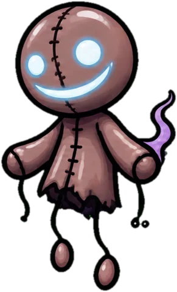

 Psychic
PsychicTap a stage to read its story.
Nullit looks like a small dark ragdoll - a round blank-faced head with hollow eye-sockets, a tiny ragged body, and limp limbs that trail as it drifts through Shadow Caves' lower passages. One faint ember of blue ghost-light glows in its left eye, the only warm thing about it. It does not walk so much as float an inch off the ground, and it gravitates toward the quietest corners of the caves, where the darkness is most complete. Children who find it by torchlight sometimes try to carry it, and it always turns up somewhere it shouldn't be.
Field note: Nullit can pass through locked doors, but only doors - it seems to have a strong opinion about walls.
Shadow Caves. Nullit and its family are found in the Shadow Caves. See everyone who lives there.
Share a Bond Food that matches its types to become friends. Nullit loves:
A Bond Food is not a trick. It joins your spirit with the Kimuro's spirit, and only when it chooses you.
Print the Kimuro adventure packs: mazes, cards, a board game and Bond Mark medals.
See the printable packs